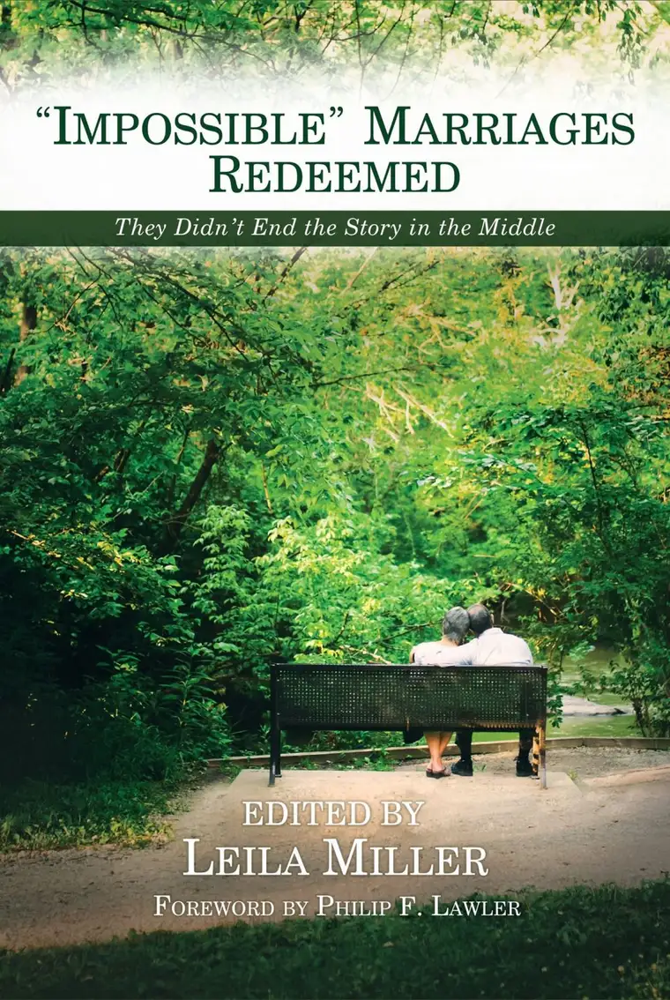

“Impossible things are happening every day.” ~ Fairy Godmother in Rodgers and Hammerstein’s “Cinderella”
When our two daughters were young, we watched, over and over, the Rodgers and Hammerstein version of “Cinderella,” featuring Whitney Houston as the Fairy Godmother. I loved this musical version of the enduring fairytale as much as my girls. So many times through the years, I have had the song, “Impossible,” which Houston did so beautifully, ringing through my head — especially in moments when the odds seem stacked against us.
The tune I hear in such times is usually accompanied by one of my favorite lines of Scripture, from Luke 1:37, uttered by the angel Gabriel to Mary as he announces that she will bear a son, despite the fact that she is a virgin, adding, to appease her confusion, “for nothing will be impossible for God.”
Both song and Scripture converged recently when I received Leila Miller’s latest compilation: “Impossible Marriages Redeemed.” The book, which launched March 25, 2020, even as the pandemic launched, felt like gold in my hands. The subtitle, “They Didn’t End the Story in the Middle,” intrigued, and as a reader, I looked forward to a privileged glimpse of marriages that had triumphed after great trial. But there was another reason for my gladness, too, for tucked within the pages revealing these great tribulations of marriages that had been to the brink and back was my own; our own.

In the foreword, Philip F. Lawler, journalist and founder of Catholic World News service, begins with this powerful statement: “This is a book full of heroes.” I froze right there. As one of 65 contributors, I was personally involved in this pronouncement, and had to consider whether my husband and I could possibly fall into the category of heroes. “What is a hero, if not someone who makes sacrifices for another?” Lawler continued. “In this book we have the testimony of people who have sacrificed their comfort and their pride to save their marriages, for the sake of their spouses and their children.”
Lawler then admitted that “most of the people who contributed…don’t think of themselves as heroes, I’m sure.” Well, yes, he is right. I don’t, and I’m sure my husband doesn’t, either. We might instead think of ourselves as grateful beggars — two broken individuals who came together in marriage in 1991, not having a clue of what we might face, unhealed and carrying large loads of baggage, and leading one another to the edge of the cliff.
Many times, I have wondered, how? How did we make it? Thinking of the dark times when our marriage did truly seem “impossible,” I remember how, little by little, God intervened. A counselor who just happened to appear at the same bench, under a large umbrella, at a pool. A co-worker who just happened to ask the right questions and lead us to help. A group that served as a safe place to bring our brokenness. The Body of Christ that held us in place. The sacraments that brought grace even when everything seemed “impossible.”
This was not a straight road by any means. It is not even a road that has now suddenly become straight. The path has been winding from the start, and as I look ahead, I still see many trees that block the meadow beyond, preventing full clarity. But the subtitle is true. Our “impossible” marriage was redeemed because somehow, we were able to see, against the cultural forces all around, that stopping our story in the middle would not have fixed what was broken.
I bring up the point in our account, noting, “Had we sought divorce, we would have been seeking a permanent solution to a temporary problem.” I mention many of the other situations in our society that follow the same — abortion, sterilization, surgically “changing” one’s sex, and suicide. “So often we make decisions based on what we are experiencing at that moment or during that season, forgetting that that moment or season will pass — and with its passing comes the possibility of brighter days ahead.” More importantly, I added, “We don’t give grace a chance. We don’t give life a chance. We don’t give God His time to work.”
I know there will be some reading this who have already gone beyond the brink. I am not here to judge anyone’s situation; I cannot. This book isn’t about judging anyone. It is about bringing hope!
Our story is one small story among many, and I have to say that as a fellow contributor, I have been overwhelmed by all of the other stories within — the majority of which Miller calls “The Redeemed.” That’s Section One and comprises most of the book. But in Section Two, we find “The Standers” — or, as Miller explains, “those wives or husbands who have chosen to stand for their marriage vows despite complete abandonment by their spouses.”
“Even the Church seems to have forgotten these few courageous souls, who are often patted on the head, scolded, or even deemed emotionally unhealthy for not ‘moving on’ to find that shiny new romance themselves,” Miller expounds, adding that “the profound sacrifice of these lonely but faithful souls makes the rest of us uncomfortable, yet we need to honor them as heroic witnesses for matrimony.”
Reading these stories can, and should be, a profound source of hope for anyone who is in a difficult marriage. The book encourages anyone with a gut sense that stopping the story in the middle will only bring more heartache to consider that, little by little, things can change, with God’s grace, and to not give up. Here, you will find hope. You will even find stories of marriages that were split for a time, and reunited, stronger than ever. You will see God’s hand and great love for his damaged children of this world.

Like Miller’s earlier compilation, Primal Loss: The Now-Adult Children of Divorce Speak,” this isn’t easy to read in moments. It is hard to hear of the pain that some couples have experienced — and others are experiencing this very moment. But running from the hard reality won’t make it go away. We need to understand what’s going on, how we can help one another heal, and how surrendering our marriages to God can transform — even marriages that seem impossible.
I am grateful to be a contributor to this book, and to the “Hope section” of Leila’s first compilation, which served as a springboard for this work. But that’s not the primary reason for my review. For you won’t find my name anywhere in either. You will find a piece of my heart, and my husband’s, and the hope that anyone who is in a troubled marriage, or knows someone who is, will find a sprig of green to grasp, as we did.
If you’d like a chance to win a free copy of the book, the editor has agreed to a giveaway. Simply comment and share the reason you’d like a copy. I will do a random drawing on May 6 and have Leila Miller send the winner a copy. (U.S. and Canada only please.)
Finally, if you are in a troubled marriage, know that I am praying for you, that the “impossible” will become something hopeful and beautiful through God’s impossible, life-giving, transforming grace.
I’ll end with a paragraph Miller includes in her introduction; words from the Church’s “Exhortation Before Marriage,” which, as she shares “was read to every couple at the altar” until recent years.
“This union, then, is most serious, because it will bind you together for life in a relationship so close and so intimate that it will profoundly influence your whole future. That future, with its hopes and disappointments, its successes and its failures, its pleasures and its pains, its joys and its elements, are mingled in every life, and are to be expected in your own. And so not knowing what is before you, you take each other for better or worse, for richer or for poorer, in sickness and in health, until death.”